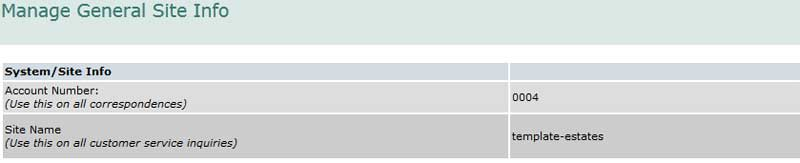
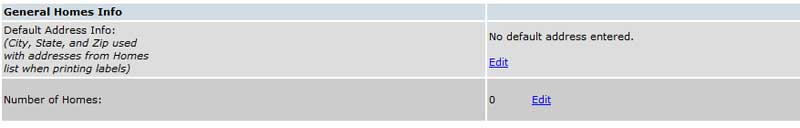
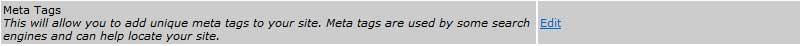

Working with General Tab: {{genpanel.msg}}
This guide explains the General section of the administrator’s panel which provides access to several useful tools and controls several high-level features.

Access the General section by selecting the “General” button on the main admin panel. There are several sections on the General screen, the first handles general homes info.

This information was set up for you when you signed up for the site and there is generally nothing that you need to update here. If you spot an error, you may correct it, of course, by selecting the “Edit” link next to the Address or the Number of Homes.
The Data Export tools allow you to download information from the site for off-line usage. You can download information for use as mailing labels, property/home records, and/or resident roster information (all the information). When you select “run tool” you will see a screen similar to the one shown below.
Selection of Directory records will create a file of information from your resident’s directory. Since it contains all the information in the directory, it can be useful for many purposes.
Selection of Users records will create a file of information from your user records. This is a useful record for identifying everyone who has access to the site whether they are associated with a Home in the community or not.
Selection of Residents records will create a file of information from your directory. It cycles through the directory and pulls the first resident in each record for the name. It gets the address from the Home record and the city, state and zip from the general record. It can be very useful if there are many unsold or vacant properties.
Selection of Homes records allows you to create a mailing label file with a unique “name.” The information comes from the Homes record (street address) and the General record (city, state, and zip).
When you have finished making your selection, you will see a screen similar to the one shown below. If you are using MS Internet Explorer, you must choose “save” rather than “open” when you click the “download as a CSV file” link. CSV (comma separated values) is a common format for database records. Excel will open the downloaded file and you can save it as a standard Excel file for future use. Many mail merge programs can read a CSV file directly. We suggest you try each of the options (mailing, home, roster) to decide which best suits your needs.
Selection of Users records will create a file of information from your user records. This is a useful record for identifying everyone who has access to the site whether they are associated with a Home in the community or not.
Selection of Residents records will create a file of information from your directory. It cycles through the directory and pulls the first resident in each record for the name. It gets the address from the Home record and the city, state and zip from the general record. It can be very useful if there are many unsold or vacant properties.
Selection of Homes records allows you to create a mailing label file with a unique “name.” The information comes from the Homes record (street address) and the General record (city, state, and zip).
When you have finished making your selection, you will see a screen similar to the one shown below. If you are using MS Internet Explorer, you must choose “save” rather than “open” when you click the “download as a CSV file” link. CSV (comma separated values) is a common format for database records. Excel will open the downloaded file and you can save it as a standard Excel file for future use. Many mail merge programs can read a CSV file directly. We suggest you try each of the options (mailing, home, roster) to decide which best suits your needs.
Check/Uncheck the 'CC Manual User Creation Notifications to this user' box to toggle the feature that will copy the Users admin on any user account notifications. This can be useful if a user doesn't receive their credentials when their account is processed (as it will narrow down the issue to something with their email account settings).
In addition to the standard text that is displayed on the User ID request form, you can add your own Association specific text. The text shows up on the form under the standard text and above the entry fields. Note you can also designate a Feature administrator for user ids in this section. You simply select the administrator from the drop down list of available feature administrators (their user records must be marked for feature administration).
If you want to customize the text that is sent in the email delivered when creating new user accounts (notifying the user of their credentials), just type the text into the "New User Notification" field and save.If you want to go back to the default notification message, just delete your text from this area.
If the Request Forms feature is available to you (extended package only), you have another option. You can create your own form and use it instead of the default form. Be sure to define the form with the user authentication set to “N” either at the feature level or at the form level. Once the form has been created, click on “Select Form” and a screen similar to the one shown below will be displayed. Simply choose your custom form from the drop down and select “Save.” Please note: By definition a user id request form must not require user authentication.
In addition to the standard text that is displayed on the User ID request form, you can add your own Association specific text. The text shows up on the form under the standard text and above the entry fields. Note you can also designate a Feature administrator for user ids in this section. You simply select the administrator from the drop down list of available feature administrators (their user records must be marked for feature administration).
If you want to customize the text that is sent in the email delivered when creating new user accounts (notifying the user of their credentials), just type the text into the "New User Notification" field and save.If you want to go back to the default notification message, just delete your text from this area.
If the Request Forms feature is available to you (extended package only), you have another option. You can create your own form and use it instead of the default form. Be sure to define the form with the user authentication set to “N” either at the feature level or at the form level. Once the form has been created, click on “Select Form” and a screen similar to the one shown below will be displayed. Simply choose your custom form from the drop down and select “Save.” Please note: By definition a user id request form must not require user authentication.
The system automatically logs all significant events in a log that you can view. A sample log is displayed below.
Over time, there will be thousands of entries in the log, so scrolling to locate a particular entry can be cumbersome. You can search for specific log events by entering a date in the format of YYYYMMDD, or one of the “Module” types shown in the Module column.
If you wanted to see which users logged in on a particular day, enter “User View” in the search field and then scroll to the day in question.
If you wanted to see which users logged in on a particular day, enter “User View” in the search field and then scroll to the day in question.
Page Search is a feature that adds a search box to the top of each page on your site. Users can enter text and the system will display any pages with matching text. We suggest you try the option before deciding whether to include it permanently on your site or not. To activate the option, select “Edit” and you will see a screen similar to the one shown below.
To add a footer, select “Edit” next to the Footer option and you will see a screen similar to the one shown below. Any information entered here will be displayed on every page of the site – at the bottom (the footer). You can use this area to call attention to special events (meeting, get-togethers, etc.), holiday messages, or even advertising. To remove a footer, simply remove the text.
The footer entry form is identical to the Page Area form. The full power of the page area editor is available to you to use in this field, including the image and linking ability.
You can, as an example, include a link to an email address, a link to another page on the site, a link to a feature on your site, or a link to an external site.
For a detailed explanation of the page area editor, go to the Pages Section of this guide.
You can, as an example, include a link to an email address, a link to another page on the site, a link to a feature on your site, or a link to an external site.
For a detailed explanation of the page area editor, go to the Pages Section of this guide.

Some Internet search engines use keywords and a description of a web site to help determine which sites to display when a user searches. These keywords are referred to as “Meta Tags.” If you would like to add your own keywords and description to your site, select “Edit” next to Meta Tags and a screen similar to one shown below will be displayed.
Site Title - Enter the title of your site, like “Template Estates Homeowners Web Site.” The title will appear in your site visitor’s browser title bar. The Site Title is not technically a “meta tag” but is useful in controlling what the browser displays.
Site Description - Enter a brief description of your site. This information may be read by some search engines and used to help index the site.
Keywords - These are unique words or phrases that identify the content of your site. Enter as many as you want separated by commas. You could enter, for example, “template, template estates, template estates homeowners association, city, state, county, new home for sale,” etc.
When you are finished, select “Save.”
It is important to note that some search engines (Google, for example) ignore Meta Tags and index sites with their own, proprietary methodology. You can submit your site to Google (and others) or just wait, they will find it eventually. Many search engines, however, still take meta tags into consideration when delivering results. Techniques have also been developed to penalize web sites considered to be "cheating the system". For example, a web site repeating the same meta keyword several times may have its ranking decreased by some search engines.
Site Description - Enter a brief description of your site. This information may be read by some search engines and used to help index the site.
Keywords - These are unique words or phrases that identify the content of your site. Enter as many as you want separated by commas. You could enter, for example, “template, template estates, template estates homeowners association, city, state, county, new home for sale,” etc.
When you are finished, select “Save.”
It is important to note that some search engines (Google, for example) ignore Meta Tags and index sites with their own, proprietary methodology. You can submit your site to Google (and others) or just wait, they will find it eventually. Many search engines, however, still take meta tags into consideration when delivering results. Techniques have also been developed to penalize web sites considered to be "cheating the system". For example, a web site repeating the same meta keyword several times may have its ranking decreased by some search engines.